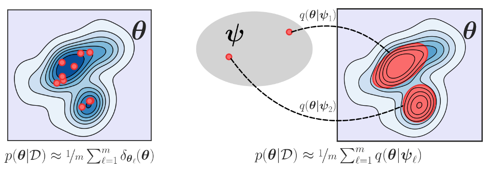

Department of Biology
Section for Computational and RNA Biology (SCARB)
Ole Maaløes Vej 5
DK-2200 Copenhagen N
and
Department of Computer Science (DIKU)
Programming Languages and Theory of Computation Section (PLTC)
Universitetsparken 5, HCØ, building B
DK-2100 Copenhagen Ø
University of Copenhagen
Denmark